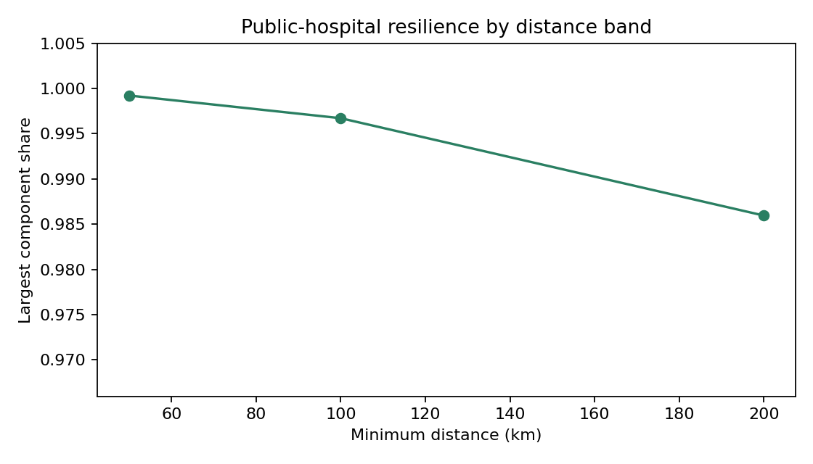
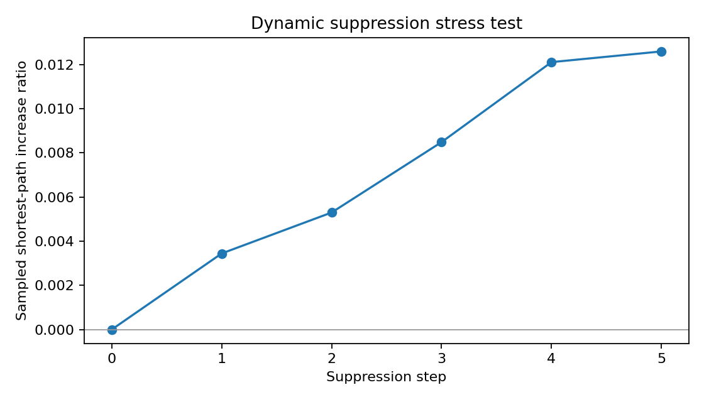

Dashboard dos algoritmos
Leitura guiada da rede pública hospitalar de 2021. Os números vêm de final_map_layers.json e dos relatórios finais CSV/JSON.
Como interpretar este dashboard
Conectada no agregadoA maior componente permanece alta mesmo após remoções no stress test.
Dependente localmenteMunicípios específicos podem depender de poucos hospitais externos.
Fora da região oficialFluxos recorrentes cruzam REGSAUDE com frequência, principalmente em transferências.
Escopo público/SUS
Gráficos principais



Top hospitais por centralidade
Betweenness mede hospitais que funcionam como pontes em caminhos mínimos; não é apenas ranking de volume.
Stress test
Remove hospitais centrais e mede se a rede nacional fica mais fragmentada ou com caminhos maiores.
Fluxos fora da região oficial
REGSAUDE é região oficial de saúde, não necessariamente UF. Cruzar região pode acontecer dentro do mesmo estado.
Principais corredores regionais
Comunidades Louvain
Comunidades são blocos funcionais sugeridos pelos fluxos; não são regiões administrativas oficiais.
Exemplos de dependência municipal
Participação de 100% vale para o fluxo filtrado recorrente e distante, não para todas as internações do município.
Arquivos completos
Legenda do mapa
residência → hospital
hospital → hospital
centralidade
stress/dependência
Linhas são amostras guiadas dos fluxos mais relevantes, não todas as 188 mil arestas.